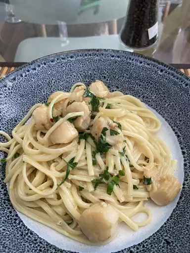

Creamy Bay Scallop Spaghetti

This scallop pasta dinner with a creamy sauce is fast and easy.
Ingredients
- 8 ounces uncooked thick spaghetti
- 1 tablespoon vegetable oil
- 1 pound bay scallops
- 2 tablespoons butter
- 3 cloves garlic, minced
Steps
- Bring a large pot of lightly salted water to a boil.
- Meanwhile, heat oil in a large skillet over high heat.
- Add butter and stir scallops until butter melts. Stir in garlic.
-
Add lemon zest and red pepper flakes. Stir in sherry and cook and stir
until alcohol cooks off, about 1 minute.